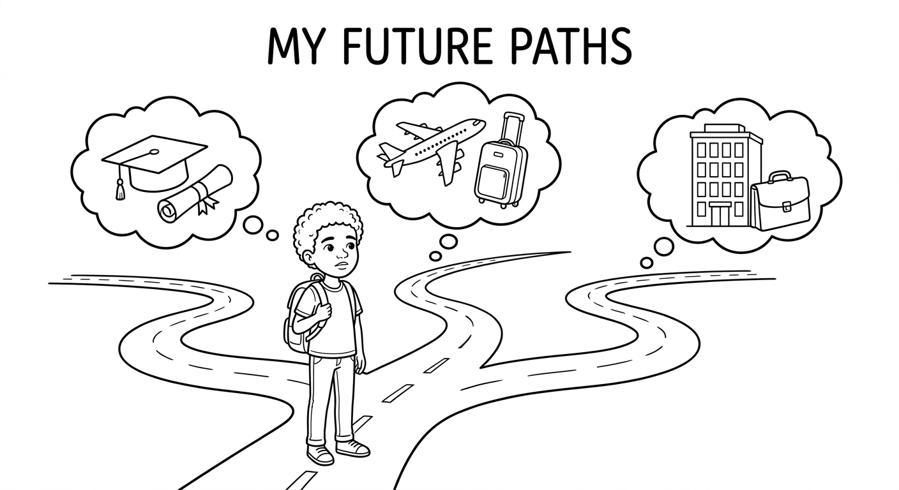
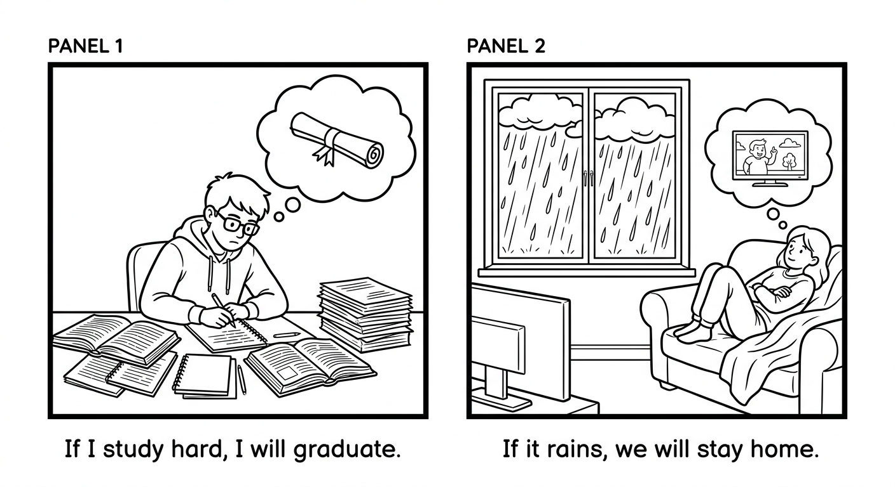
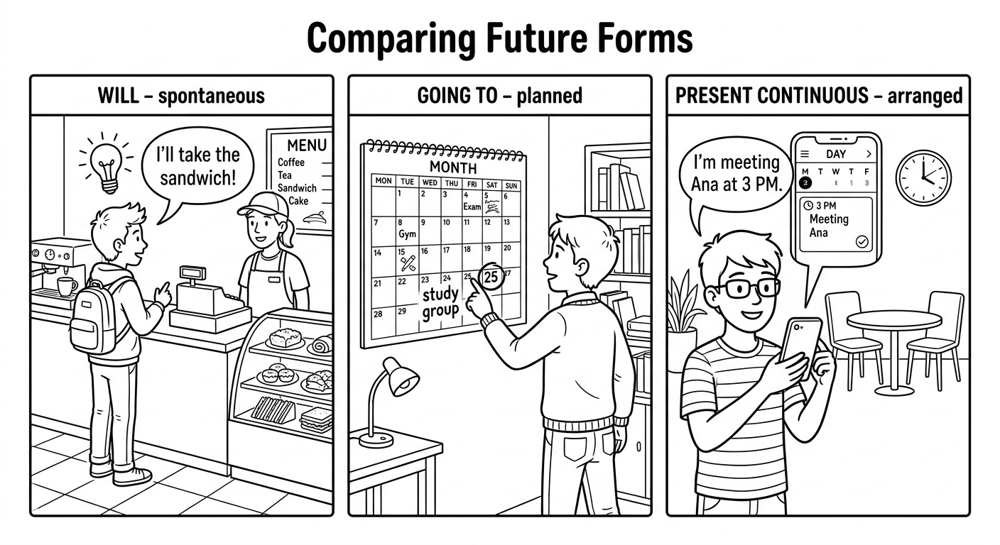
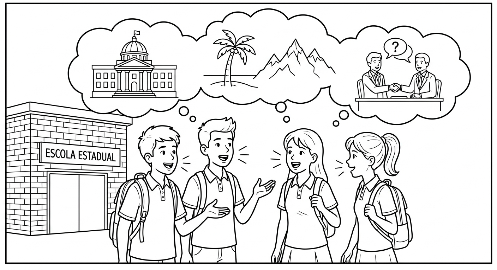
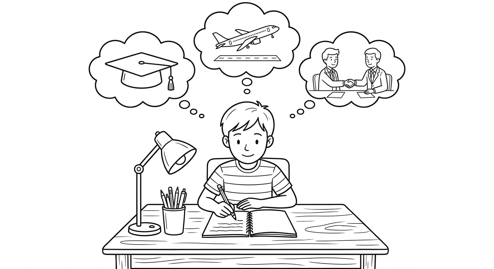

Simple Future: Expanded Usage
In this chapter, you will learn how to use the future with time clauses (when, before, after, as soon as, until), form first conditional sentences, combine different future forms, and get an introduction to the future continuous tense.

Future with Time Clauses
When we talk about the future, certain time words introduce a clause that uses the Present Simple (NOT will). The main clause uses will + base verb.
| Time Word | Meaning (Significado) | Example |
|---|---|---|
| when | quando | When I finish school, I will travel. |
| before | antes de | Before you leave, I will give you a gift. |
| after | depois de | After we eat, we will study. |
| as soon as | assim que | As soon as I get home, I will call you. |
| until | ate que | I will wait until you arrive. |
Key Rule: Time clause = Present Simple | Main clause = will + base verb
Examples with Portuguese Translations
When I finish school, I will travel to Europe.
Quando eu terminar a escola, eu vou viajar para a Europa.
Before Rafaela leaves, she will say goodbye to everyone.
Antes de Rafaela ir embora, ela vai se despedir de todos.
After we finish the exam, we will celebrate.
Depois que terminarmos a prova, vamos comemorar.
As soon as Mateus gets his results, he will tell his parents.
Assim que o Mateus receber os resultados, ele vai contar para os pais.
I won't leave until the teacher arrives.
Eu nao vou sair ate que o professor chegue.
When the rain stops, we will go outside.
Quando a chuva parar, nos vamos sair.
Do NOT use will in the time clause! Use the Present Simple after when, before, after, as soon as, until.
- "When I finish school, I will travel." (CORRECT)
"When I will finish school, I will travel."(WRONG!)- "Before she goes home, she will buy bread." (CORRECT)
"Before she will go home, she will buy bread."(WRONG!)
Suggested time: 25 minutes
L1 Interference: In Portuguese, the future tense is often used in both clauses: "Quando eu terminar, eu vou viajar." Although Portuguese uses the future subjunctive (terminar), students may try to mirror this with "will" in English. Emphasize that English uses the Present Simple in the time clause, even though the meaning is future.
Activity: Write sentence starters on the board ("When I get home...", "Before the class ends...", "After I eat lunch...") and have students complete them with their own ideas using will.
Complete each sentence with the correct form of the verb in parentheses. Remember: use the Present Simple in the time clause and will + base verb in the main clause.
Each sentence has a mistake in the time clause. Find the error and rewrite the sentence correctly.
When I will arrive in Sao Paulo, I will visit my cousin.
When I arrive in Sao Paulo, I will visit my cousin.She will wait until the rain will stop.
She will wait until the rain stops.Before we will eat dinner, we will wash our hands.
Before we eat dinner, we will wash our hands.As soon as Pedro will finish his test, he will go home.
As soon as Pedro finishes his test, he will go home.After they will graduate, they will look for jobs.
After they graduate, they will look for jobs.First Conditional
We use the first conditional to talk about things that are possible or likely in the future. It describes a real condition and its probable result.
| Part | Structure | Example |
|---|---|---|
| If clause (condition) | If + Present Simple | If it rains tomorrow, |
| Main clause (result) | will + base verb | we will stay home. |
Formula: If + Present Simple, will + base verb
Reversed order: Subject + will + base verb + if + Present Simple (no comma needed)
| Order | Sentence | Comma? |
|---|---|---|
| If clause first | If you study hard, you will pass the exam. | YES |
| Main clause first | You will pass the exam if you study hard. | NO |
Real-Life Conditional Examples
If you don't do your homework, the teacher will be upset.
Se voce nao fizer o dever de casa, o professor vai ficar chateado.
If it rains on Saturday, we will cancel the barbecue.
Se chover no sabado, vamos cancelar o churrasco.
If I save enough money, I will buy a new phone.
Se eu economizar dinheiro suficiente, vou comprar um celular novo.
I will help you if you ask me nicely.
Eu vou te ajudar se voce me pedir com educacao.
If you eat too much candy, you will get a stomachache.
Se voce comer muito doce, vai ter dor de barriga.
If she doesn't sleep well, she won't feel good tomorrow.
Se ela nao dormir bem, ela nao vai se sentir bem amanha.
Use a comma after the "if" clause when it comes first in the sentence. When the main clause comes first, no comma is needed.
- If you study, you will pass. (comma after "if" clause)
- You will pass if you study. (no comma)

Dialogue: Making Plans
Suggested time: 30 minutes
Activity: After reading the dialogue, have students practice in pairs by asking each other "What will you do if...?" questions. Give them prompts such as: "...it rains this weekend?", "...you get a good grade?", "...you have free time tomorrow?"
L1 Note: In Portuguese, the conditional structure "Se + futuro do subjuntivo, futuro do indicativo" is similar in meaning but different in form. Students may want to use "will" in both clauses. Remind them: the "if" clause always uses Present Simple, never "will".
Complete each sentence with the correct form of the verb in parentheses. Use the Present Simple in the "if" clause and will + base verb in the main clause.
Match each if-clause (left) with the correct main clause (right). Write the letter in the space provided.
Future Plans in Context: Will, Going To, and Present Continuous
English has three main ways to express future actions. Each one has a different use:
| Form | Use | Example |
|---|---|---|
| will + base verb | Predictions, promises, spontaneous decisions, offers | I think it will rain. / I'll help you. |
| be going to + base verb | Plans and intentions (decided before speaking), predictions with evidence | I'm going to study medicine. |
| Present Continuous (am/is/are + verb-ing) | Fixed arrangements with a specific time/place | I'm meeting Ana at 3 p.m. |

A Realistic Scenario: Fernanda's Weekend
Fernanda is going to visit her grandmother this weekend. She decided last week.
Fernanda vai visitar a avo dela neste fim de semana. Ela decidiu na semana passada.
She is leaving at 8 a.m. on Saturday. The bus ticket is already booked.
Ela vai sair as 8 da manha no sabado. A passagem de onibus ja esta reservada.
"Oh, I forgot to buy flowers! I'll stop at the flower shop on the way."
"Ah, eu esqueci de comprar flores! Vou parar na floricultura no caminho."
I think her grandmother will be very happy to see her.
Eu acho que a avo dela vai ficar muito feliz em ve-la.
Look at the sky! It's going to be a beautiful day for the trip.
Olha o ceu! Vai ser um dia lindo para a viagem.
She is having lunch with her cousins at noon on Sunday.
Ela vai almocar com os primos ao meio-dia no domingo.
The future continuous describes an action that will be in progress at a specific time in the future.
| Form | Structure | Example |
|---|---|---|
| Affirmative | Subject + will be + verb-ing | At 8 p.m., I will be studying. |
| Negative | Subject + won't be + verb-ing | She won't be sleeping at 10 p.m. |
| Interrogative | Will + subject + be + verb-ing? | Will you be working at 3 p.m.? |
Use it when: You want to say what will be happening at a particular moment in the future.
- This time tomorrow, I will be flying to Rio. (Amanha a esta hora, eu estarei voando para o Rio.)
- At 7 p.m. tonight, they will be having dinner. (As 19h hoje, eles estarao jantando.)
- Don't call me at 9 a.m. I will be taking an exam. (Nao me ligue as 9h. Eu estarei fazendo prova.)
Suggested time: 25 minutes
Key distinction for students: The main challenge at this level is choosing between the three forms. Use this simple guide on the board:
- Will: "I just decided now" / "I think..." / "I promise..."
- Going to: "I already decided" / "I can see it happening"
- Present Continuous: "It's arranged - I have the ticket/reservation/appointment"
Future Continuous: This is an introduction only. Students should understand the basic concept (action in progress at a future time) without needing to master all its uses yet.
Complete each sentence with the correct future form: will, going to, present continuous, or future continuous (will be + verb-ing). Use the verb in parentheses.
Select the best option to complete each sentence.
"The phone is ringing!" "Don't worry, I _____ it."
b) 'll answerDaniela has made her decision. She _____ law at university next year.
b) is going to studyAt 10 a.m. tomorrow, the students _____ their science presentation.
c) will be givingWe _____ dinner with Tia Marcia on Sunday. She already made reservations.
c) are havingI think electric cars _____ more popular in the next ten years.
a) will becomeReading & Writing: After Graduation

It is the last week of school, and four friends are sitting in the school courtyard talking about their plans for the future. They are all finishing the third year of ensino medio and feeling excited but nervous about what comes next.
Juliana: I can't believe school is almost over! I'm going to miss this place. But I already know what I'm going to do. I'm going to study nursing at UFMG. If I pass the vestibular, I will start classes in March. I'm really nervous, but I've been studying hard.
Rafael: That's great, Ju! I'm not sure about university yet. If I don't get into a public university, I will take a gap year and work to save money. My uncle has a restaurant, and he said I can work there. When I have enough money, I will apply to private universities too.
Bianca: I have a completely different plan. As soon as I graduate, I'm going to travel. My cousin lives in Lisbon, and she invited me to stay with her for three months. I will look for a part-time job there. If I find one, I will stay longer. Before I leave Brazil, I will get my passport and buy my plane ticket. I'm so excited!
Tiago: Wow, Bianca, that sounds amazing! My plan is simpler. I'm going to do a technical course in IT. I'm already registered at SENAI. Classes start in February, so I'm starting next month! After I finish the course, I will look for an internship at a tech company. If I get good experience, I think I will be able to get a good job. This time next year, I will be working with computers every day!
Juliana: We all have such different plans! But one thing is certain: when we look back in five years, we will be proud of ourselves.
Rafael: I agree. And I promise I will keep in touch with all of you, no matter what happens.
Bianca: Me too! If we all succeed, we will have a big reunion dinner. Deal?
Everyone: Deal!
Read each sentence. Write T (True) or F (False) based on the reading passage.
Answer the questions in complete sentences based on the reading passage.
What will Rafael do when he has enough money?
When he has enough money, he will apply to private universities.What will Bianca do before she leaves Brazil?
Before she leaves Brazil, she will get her passport and buy her plane ticket.What will Tiago do after he finishes his technical course?
After he finishes his technical course, he will look for an internship at a tech company.What condition does Bianca set for staying longer in Lisbon?
If she finds a part-time job, she will stay longer in Lisbon.Write a short paragraph (6-8 sentences) about your plans after you finish school. Use the structures you learned in this chapter. Try to include:
- At least one time clause (when, before, after, as soon as, until)
- At least one first conditional sentence (If + present simple, will...)
- Different future forms (will, going to, present continuous)
Example start: "After I finish school, I am going to..."

Suggested time: 20 minutes for the writing activity
Pre-writing activity: Before students write, brainstorm on the board: "What are some things people do after finishing school?" (university, work, travel, technical courses, military service, gap year, etc.). This will give students vocabulary and ideas.
Assessment criteria:
- Correct use of at least one time clause with Present Simple
- Correct use of at least one first conditional sentence
- Appropriate use of different future forms (will, going to, present continuous)
- Clear and coherent paragraph structure
- Minimum of 6 sentences
Extension activity: Have students share their writing in pairs and ask each other follow-up questions using first conditional: "What will you do if that doesn't work out?"